6/29/17 Update: There’s a new Azure Solution Template for Jenkins here: https://azure.microsoft.com/en-us/blog/announcing-the-solution-template-for-jenkins-on-azure/
Here’s how to get Jenkins on Azure. The following is based on: Azure Friday: Host Jenkins on Azure - with some added modifications to make sure you are SSH tunneling into the Jenkins app instead of accessing over an insecure channel.
Here are the steps we’ll follow:
1. Deploy Azure Jenkins Template, which will provision Jenkins on a VM for you.
2. Get Jenkins VM IP Address
3. Open Port 8080 on the Azure Network Security Group
4. SSH to VM (with either Putty or bash)
5. Get Temp Admin Password
6. Launch Jenkins Admin App
7. Setup Jenkins
8. Create Admin User
9. Restart Jenkins
10. Login
11. Happy Dance
Deploy Azure Jenkins Template
1. Go to http://aka.ms/azjenkins
2. Click ‘Deploy to Azure’
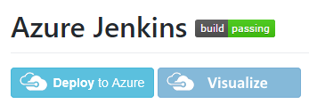
3. Complete the form, click ‘Purchase’ and wait for it to provision the Linux VM.
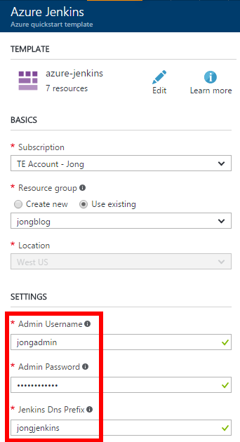
Get Jenkins VM IP Address
1. Get the Jenkins VM IP Address from the Overview blade, you will need this later.
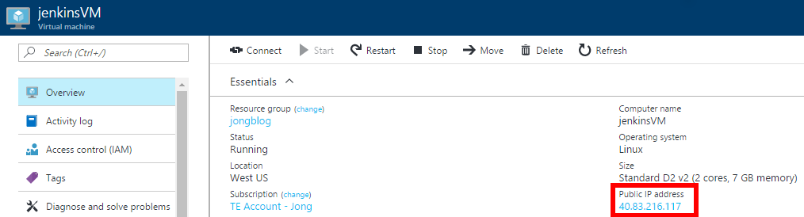
Open Port 8080
The Jenkins Admin app is on port 8080, but, at the time of this writing, port 8080 is not open in the Network Security Group created by the Azure Deployment template.
1. In the Azure Portal, find the Network Security Group that was just created.
2. If you don’t see 8080 there, then click Inbound Security Rules, then click Add
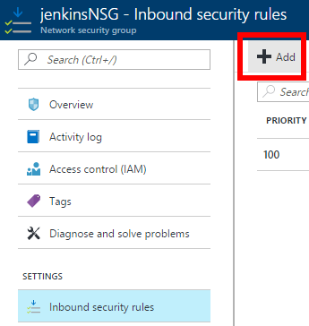
3. Give it a name and set Port range to 8080
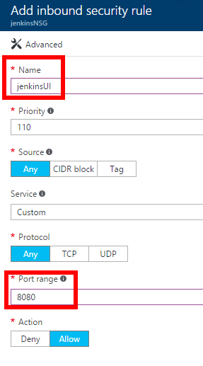
Connect to VM
We are going to connect to the VM via SSH to:
1. Get the temp Jenkins Admin password
2. Launch the Jenkins Admin app
You can use an SSH client such as Putty or bash.
Since the VM does not have an SSL cert, you should create a secure tunnel to port 8080 and access via 127.0.0.1 instead of going to the website over the unencrypted internet.
Connect via Putty
1. Download and Open Putty
Option 1: Putty Command Line
You can connect via command line using the following command. This will open the secure channel as well.
|
Option 2: Putty UI
1. Enter the Jenkins VM Public IP, enter a name ‘jenkinsvm’ and then click Save.

2. In the left nav, click Connection -> SSH -> Tunnels
3. Set the following values:
- Source port: 8080
- Destination: 127.0.0.1:8080
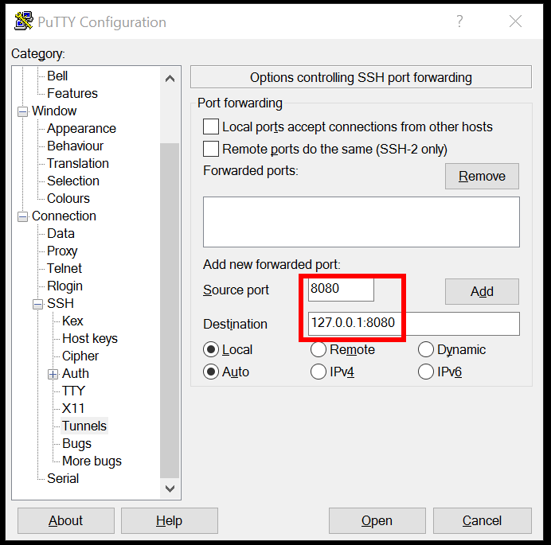
4. Click “Add” button and you will see L8080 127.0.0.1:8080 in the textarea.
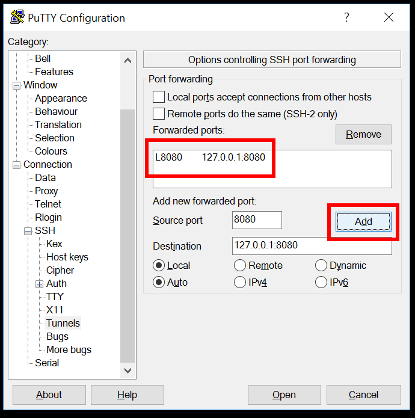
5. Go back to the “Session” tab and click “Save” button to save the port forward that you just entered.
6. Click Open and click Yes if you see the following dialog:

7. Login using the username and password you used to create the Jenkins VM.
You will see an output like the following:
|
Connect via bash
1. Open a bash command prompt and run the following command:
Replace jongadmin with the username you created the Jenkins VM with. Replace 40.83.216.117 with your Jenkins VM IP Address
|
See my blog post here, for instructions on how to run bash on Windows.
This will create an ssh connection and create a secure tunnel to port 8080 (the Jenkins Admin app)
2. Enter yes and hit enter if you see the following:
|
You will see an output similar to the following:
|
Get Temp Admin Password via SSH
The next step is to connect to the Jenkins Admin app, but we first need to get the temp password that is stored on the VM.
1. In SSH terminal, enter the following command to get the temp admin password
|
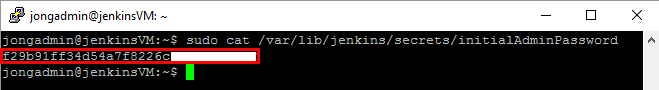
2. Copy that password to your clipboard.
Launch Jenkins Admin App
1. Open a browser and go to http://127.0.0.1:8080
You will see the following:
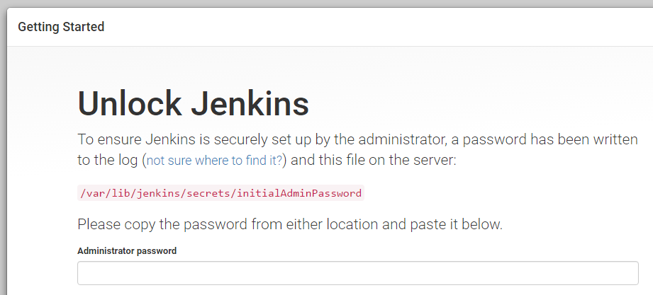
2. Enter the temp admin password that you retrieved in the previous step.
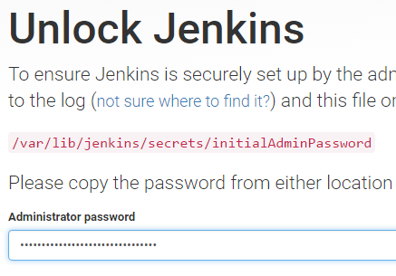
Setup Jenkins
1. Click Install Suggested Plugins
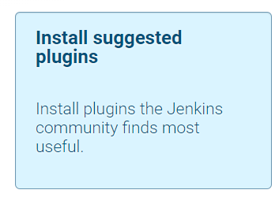
Create First Admin User
1. Complete the form to create an admin user and then click continue.
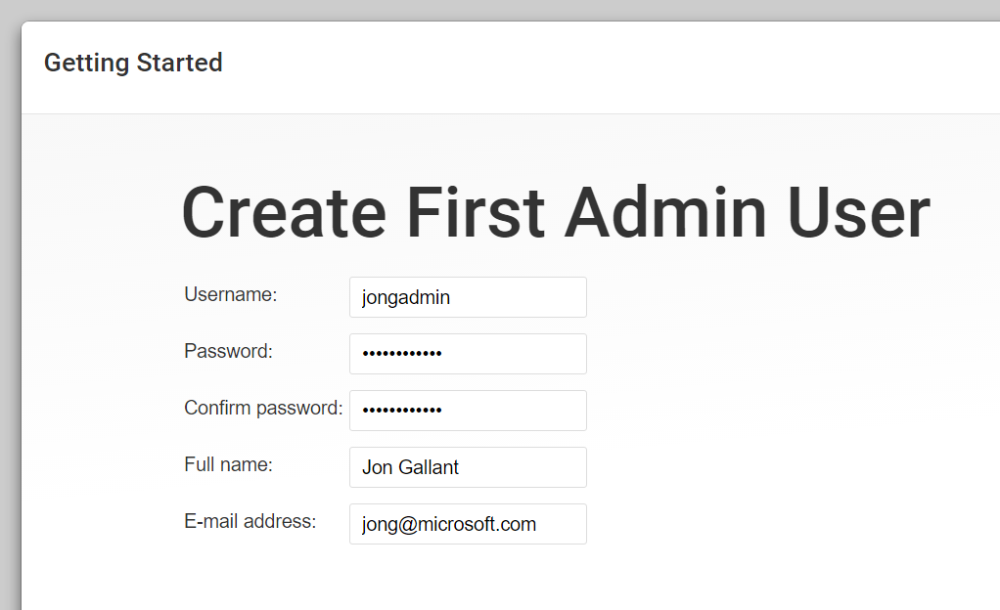
2. Click Restart
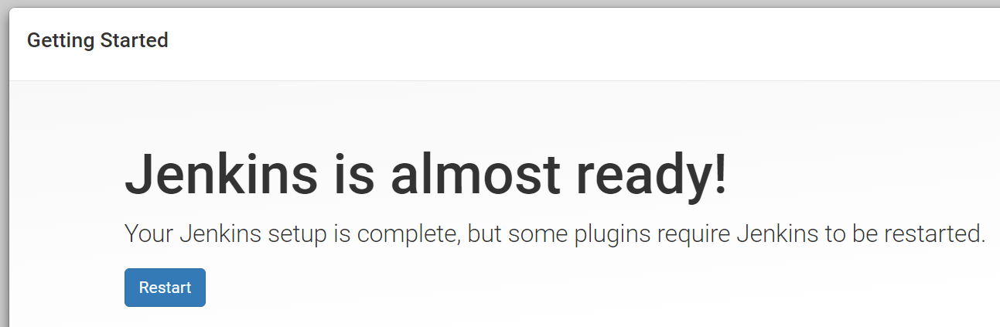
Login to Jenkins
1. Hit http://127.0.0.1:8080 again and enter the credentials you created in the previous step.
You now have Jenkins running on Azure!
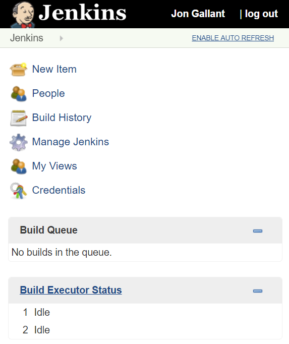